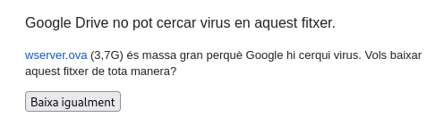
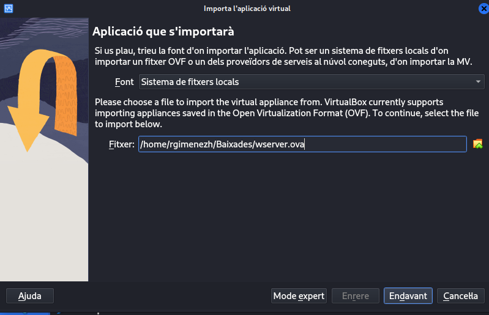
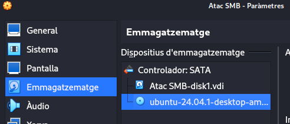
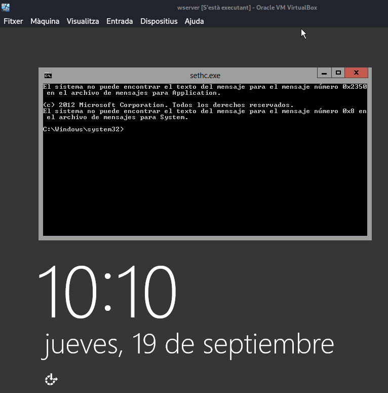
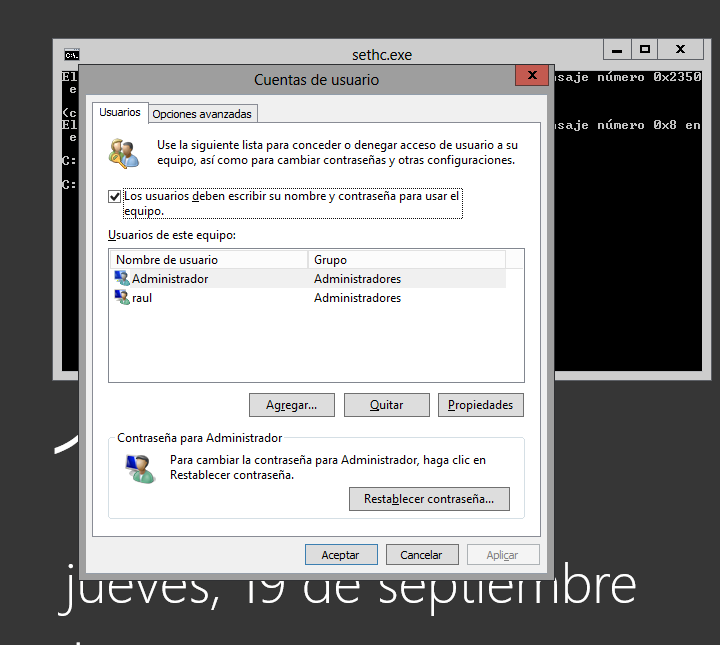

Mòdul Professional 6 - UF1: ACTIVITAT Sticky Keys
#SMXMP06UF1
Índex
1. Llicència d'ús

2. Introducció
En un sistema Windows hi ha una sèrie de programes que s'inicien abans de que l'usuari entri en el sistema. Si un atacant aconseguir canviar el programa que s'executa per defecte per un altre que permeti executar comandes podria entrar en el sistema sense conèixer cap compte d'usuari.
Però a més tindrà els privilegis de l'usuari amb el que Windows executa el programa. En temps d'arrencada normalment és l'usuari SYSTEM, que és un usuari privilegiat de Windows, i que permet fer qualsevol tasca en el sistema operatiu com per exemple canviar la contrasenya de l'administrador.
Amb una tècnica com aquesta un usuari limitat del sistema podrà incrementar els seus privilegis d'accés al sistema i aconseguir fer coses a les que no està autoritzat. O simplement un hacker sense cap mena d'informació sobre els usuaris pot modificar el compte d'administració i accedir-hi o crear-se el seu propi usuari…. o simplement accedir al sistema i fer el que vulgui.
Les StickyKeys són una característica d'accessibilitat per usuaris amb problemes per mantenir dues o més tecles premudes alhora. Quan cal una combinació de tecles per aconseguir accés a determinades opcions, com CTRL+P permet prémer les tecles una a una en comptes de requerir que es premin de forma simultània.
Utilitzarem això com a via d'entrada al sistema.
3. Activitat
Imaginem que ens han contractat en una petita empresa que funciona amb aquest servidor Windows. El problema que ens trobem el primer dia és que l'informàtic anterior el van acomiadar i va marxar de males maneres, i per venjança ha modificat tots els passwords del sistema. Lògicament no podem formatar el servidor, ja que perdriem totes les dades… però hi tenim accés físic, així que en principi tenim moltes vies per accedir a la informació i/o hackerjar-l'ho directament, que és el que et proposses fer…
3.1. Preparació de l'activitat
- Descarregueu la OVA del Windows Server.

- Importeu-la a VirtualBox.

- Descarregueu l'última ISO de Ubuntu.
3.2. Atac
ATENCIÓ: Cal que Windows Server s'apagui correctament, sinó bloqueja el sistema de fitxers i per tant des de Ubuntu no podrem fer els canvis necessaris. Si teniu Windows apagat malament, la forma més simple és eliminar la màquina virtual i tornar-la a importar.
Arranqueu una màquina virtual de Windows amb un LiveCD, situeu-vos al sistema de fitxers de Windows i dins de C:\Windows\System32 i substituïu el programa SETHC.exe per CMD.exe. Per fer-ho:
- Simularem un USB amb l'Ubuntu tot afegint la seva ISO al CD de la màquina virtual.

- Triarem idioma, teclat etc al assistent de Ubuntu, i sobretot triarem l'opció Try Ubuntu!
- Anirem al explorador de fitxers i buscarem el disc de Windows, el reconeixerem per la mida i per les carpetes que conté.

- Navegarem fins a
c:/Windows/System32. - Renombrarem
sethc.exeasethc_OLD.exeper no perdre l'arxiu. (per entorn gràfic o per terminal) - Farem una còpia de
cmd.exei la renombrarem asethc.exe. - Apaguem la VM i treiem la ISO de Ubuntu del CD.
- Inicieu el Windows Server i comprovareu que el sistema arranca normalment
- Premeu cinc vegades la tecla SHIFT i veureu que se us obre un terminal amb privilegis de l'usuari SYSTEM!

Crearem un usuari nou, per no tocar l'
Administrador, i l'assignarem permissos deAdminamb l'eina de gestió d'usuaris.netplwiz

- Inicieu el sistema normalment i comproveu que l'usuari que heu creat pot entrar en el sistema. Sou capaços de crear un usuari amb privilegis d'administració?
- Penseu en el temps que trigarieu amb una mica de pràctica per a hackerjar el sistema.
3.3. Defensa
Un cop acabat investigueu:
- Descobriu com es poden desactivar les Sticky Keys en Windows.
- Altres idees per evitar l’atac?
- Linux també pot ser vulnerable?
- Encara que no puguessim fer l'atac, amb el LiveCD hem tingut accés al disc… Què podriem fer com a atacants i com podem evitar-ho com administradors?